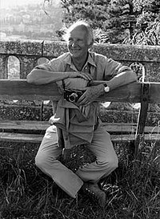

henri catier bressson
Henri Cartier-Bresson (Chanteloup-en-Brie, 22 de agosto de 1908 — Montjustin, 3 de agosto de 2004) foi um fotógrafo, fotojornalista e desenhista francês. Biografia Família e infância Cartier-Bresson era filho de pais de uma classe média (família de industriais têxteis), relativamente abastada. Quando criança, ganhou uma câmera fotográfica Box Brownie, com a qual produziu inúmeros instantâneos. Sua obsessão pelas imagens levou-o a testar uma câmera de filme 35mm. Além disto, Bresson também pintava e foi para Paris estudar artes em um estúdio. A família Cartier-Bresson dava nome a uma das indústrias têxteis mais famosas da França, no início do século XX. De acordo com o biógrafo Pierre Assouline, a Filature Cartier-Bresson era conduzida com certo paternalismo, responsabilizando-se pela construção de creches, escolas, igrejas e armazéns nas vilas de operários. Ainda segundo Assouline, isso estava vinculado à "moral cristã" da família, cuja fé católica estava representada até mesmo na marca de seus produtos - as iniciais "C" e "B" separadas por uma cruz.[1] Para o fotógrafo, seus pais eram "católicos de esquerda": Católicos sinceros, que acreditavam na justiça, no compartilhar, na caridade, na tolerância. Afinal de contas, se pensarmos bem, os princípios do cristianismo não estão assim tão distante dos princípios do comunismo...[2] Desde muito cedo, Henri Cartier-Bresson se interessou pela pintura. Embora seu pai também desenhasse, foi seu tio Louis que o apresentou primeiro às tintas e telas e, pouco mais tarde, a seu primeiro professor - um aluno de Fernand Cormon.[3] A alfabetização pela pintura (1927-1928) O contato com as obras e publicações surrealistas, por volta de 1926, leva Cartier-Bresson a frequentar os encontros do grupo, até ser finalmente aceito no núcleo do movimento: as salas reservadas dos cafés Cyrano e Dame Blanche, em Paris, onde os nomes mais conhecidos do grupo costumavam se reunir em torno de André Breton.[4] Em 1927, Henri Cartier-Bresson inicia seus estudos com o pintor André Lhote,[5] cubista da Section d'Or, grupo que se dedicava ao estudo e à aplicação da proporção áurea na pintura: Todos os quadros da Renascença foram construídos sobre este princípio, que se encontra em alguns afrescos de Pompeia, que Poussin (após os góticos) foi quase o único a adotar na França do século XVII, Seurat no século XIX, e os cubistas, particularmente Juan Gris, no século XX.[6] Mais tarde, o fotógrafo diria que foi Lhote quem o ensinou a "ler e escrever".[7] A recusa em adotar o "espírito sistemático" de André Lhote, no entanto, o levou a abandonar os estudos após dois anos, partindo, então, para uma viagem à Costa do Marfim, onde permaneceria por um ano.[8] Descoberta da fotografia e Segunda Guerra Mundial A primeira câmera Leica de Henri Cartier-Bresson Em 1931, aos 22 anos, Cartier-Bresson viajou pela África, onde passou um ano como caçador. Porém, uma doença tropical obrigou-o a retornar a França. Foi neste período, durante uma viagem a Marselha, que ele descobriu verdadeiramente a fotografia, inspirado pela fotografia Três Rapazes no Lago Tanganica do húngaro Martin Munkácsi, publicada na revista Photographies (1931), mostrando três rapazes negros a correr em direção ao Lago Tanganica.[carece de fontes] Quando eclodiu a Segunda Guerra Mundial, Bresson serviu o exército francês. Durante a invasão alemã, Bresson foi capturado e levado para um campo de prisioneiros de guerra. Tentou por duas vezes escapar e somente na terceira obteve sucesso. Juntou-se à Resistência Francesa em sua guerrilha pela liberdade.[carece de fontes] Carreira Quando a paz se restabeleceu, Cartier-Bresson, em 1947, fundou a agência fotográfica Magnum junto com Bill Vandivert, Robert Capa, George Rodger e David Seymour "Chim". Começou também o período de desenvolvimento sofisticado de seu trabalho. Revistas como a Life, Vogue e Harper's Bazaar contrataram-no para viajar pelo mundo e registrar imagens únicas. Da Europa aos Estados Unidos, da Índia à China, Bresson dava o seu ponto de vista especialíssimo.[carece de fontes] Tornou-se também o primeiro fotógrafo da Europa Ocidental a registrar a vida na União Soviética de maneira livre. Fotografou os últimos dias de Gandhi e os eunucos imperiais chineses, logo após a Revolução Cultural. Na década de 1950, vários livros com seus trabalhos foram lançados, sendo o mais importante deles "Images à la Sauvette", publicado em inglês sob o título "The Decisive Moment" (1952). Em 1960, uma megaexposição com quatrocentos trabalhos rodou os Estados Unidos em uma homenagem ao nome forte da fotografia.[carece de fontes]s
